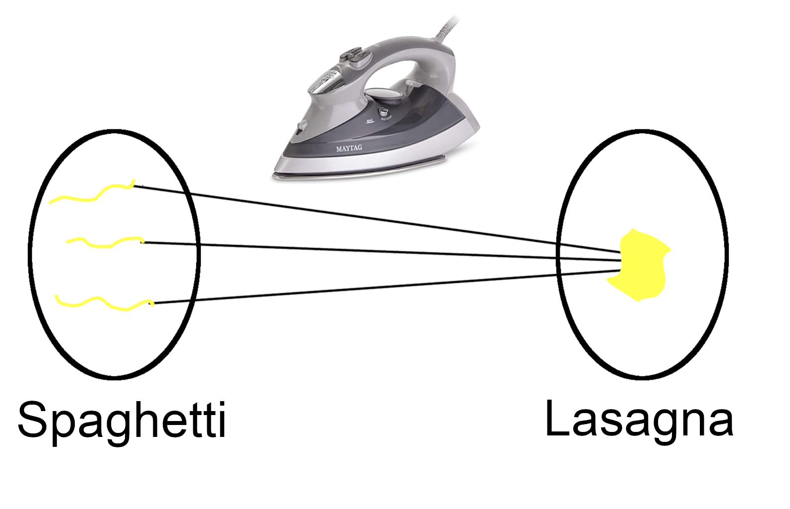

"First," Bruno thinks to himself, I need to take care of these noodles. He looks at the spaghetti noodles. Perplexed, Bruno lays them out in a line and thinks. "I just need some way to join these together..."
Suddenly, he remembers his clothing iron. "Using this, I can easily join several spaghetti noodles into a single lasagna noodle." He's sharp like that.
Bruno notices how spaghetti elements are transformed into one large noodle.
"I wonder," he muses, "if this iron is injective or surjective?"
For some reason, he won't go on until he answers this. Try and help him out: